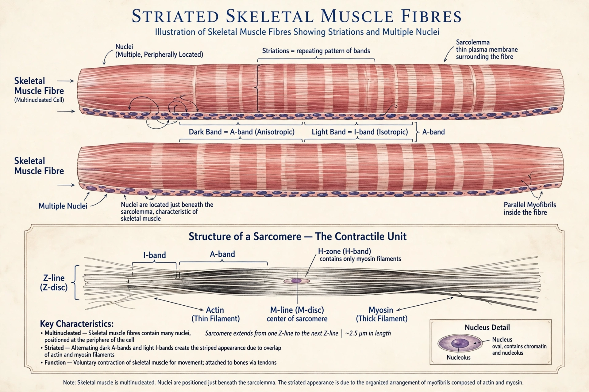

A muscle cell, also known as a myocyte, is a mature contractile cell in the muscle of an animal. In humans and other vertebrates there are three types: skeletal, smooth, and cardiac (cardiomyocytes). A skeletal muscle cell is long, cylindrical, multinucleated and contains many mitochondria; smooth muscle cells are spindle-shaped and uninucleate; cardiac muscle cells are branched and joined by intercalated discs.

Muscle cells are specialised for contraction. Their cytoplasm (sarcoplasm) is filled with myofibrils — bundles of the contractile proteins actin and myosin organised into repeating units called sarcomeres, bounded by Z-discs. The arrangement of thick and thin filaments gives skeletal and cardiac muscle their striated appearance under the microscope. The cell membrane is called the sarcolemma; the smooth endoplasmic reticulum, specialised for calcium storage and release, is the sarcoplasmic reticulum.
Contraction follows the sliding filament theory: calcium ions released from the sarcoplasmic reticulum bind troponin, exposing binding sites on actin; myosin heads then attach, pivot (the power stroke, powered by ATP hydrolysis) and detach, pulling the filaments past each other and shortening the sarcomere. In skeletal muscle the signal arrives at the neuromuscular junction, where acetylcholine triggers an action potential that travels down transverse (T) tubules. Smooth muscle contracts more slowly and tonically, regulated by calmodulin and myosin light-chain kinase rather than troponin.
Muscle cells develop from myoblasts, which in skeletal muscle fuse to form multinucleated myotubes. Satellite cells retained in adult muscle act as stem cells for growth and repair. Cardiac muscle cells, by contrast, have very limited regenerative capacity, which is why heart damage heals largely by scarring.
Sarcomere · Myosin · Actin · Skeletal muscle · Muscle contraction